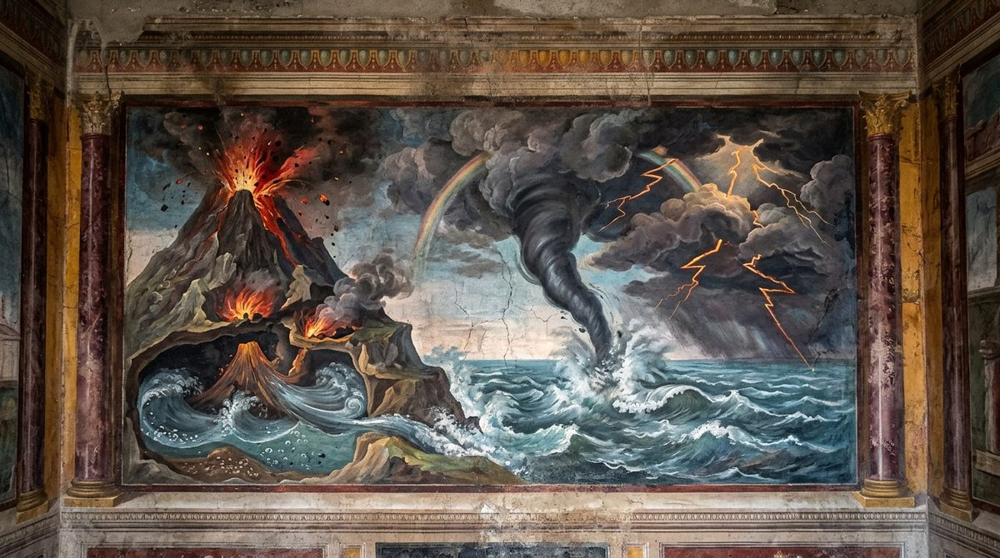
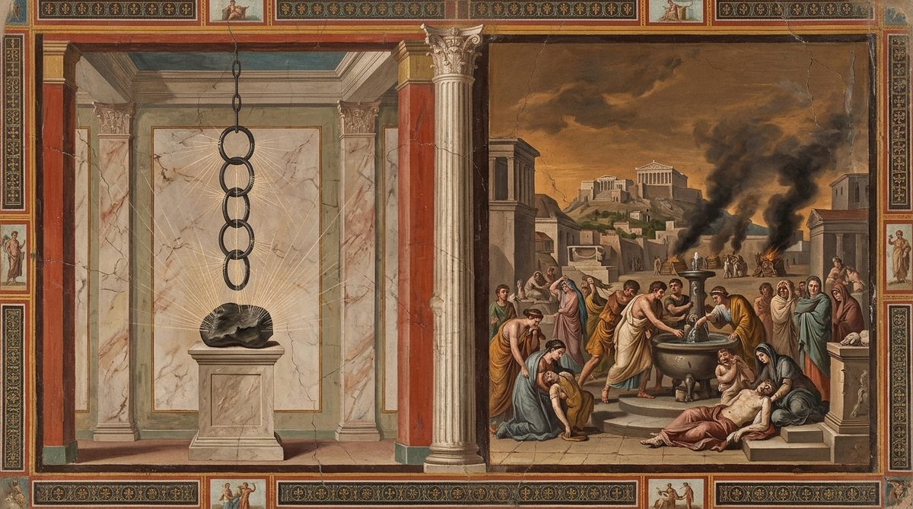

De Rerum Natura · on the nature of things
Athens, which gave men grain, laws and Epicurus, who found the fault in the vessel of the mind; the fears that remain come from the sky, and the book explains them: thunder, lightning and the thunderbolt, its fire, its speed and its season, and why it cannot be Jupiter's; waterspouts, clouds, rain and the rainbow; earthquakes; why the sea does not grow; the fires of Etna; the flooding of the Nile; the Avernian places whose breath kills birds, and the many harmful exhalations of the earth; springs cold by day and hot by night, the spring of Hammon and the spring in the sea at Aradus; the stone of Magnesia and how it draws iron; the seeds of disease and why diseases differ by place; and the plague of Athens, with which the poem, finished or not, ends.
The text followed is the printed Perseus text, as in Books 1 to 5. Six gaps are marked and left unfilled: three in the proem, after 47, 51 and 52, where the sentence to the Muse never closes and 52-53 are fragments; one after 607; one after 697; and one after 839. The source marks a seventh after the last line, 1286, and the poem breaks off there in the middle of the plague. The source prints two doubtful readings in capitals, caeliQUE at 87 and versabundaQUE at 582, and the English renders both as printed, with a note at 87 giving the correction most editors make. Lines 30-31, 555, 826-829, 953-957 and 1012 are uncertain in text or construction and are rendered for their probable sense; 60-61 recur at 94-95, where editors think them misplaced, and are rendered where they stand. As in Books 3 to 5 the transcription doubles a word wherever the original marked a diaeresis, so that "air" appears as aeeraeër, aeeraaeëra and aeereaeëre at some twenty places (250, 253, 254, 304, 346, 684, 685, 831, 1003, 1142 and elsewhere), and poetae (754), suevit (953) and coercet (954) are doubled in the same way; these are artifacts of the copy, read as the single word without notice.
The register is that of the earlier books, with one word that changes its sense. Anima in this book is most often the air itself, a blast of wind shut in a bladder (130) or in the earth (578, 586, 591, 693), and there it is "air" or "force of air"; where it is the life that leaves a dying bird or dog (839, 1223) it is "spirit", as in Book 3. Simulacra are "images" both for the films that stream from the gods' bodies to the mind (80) and for the statues the thunderbolt breaks (419). Templa are "precincts", of the mortal world at 43 and of the gods at 1269; at 750 alone templum is a building, the shrine of Pallas on the Acropolis, and is "temple". Ratio is "reasoning" in the refrain (41), "principle" where it asks the manner of a thing (639, 1090), and "pattern" at 1138, where it is the course of a disease. Inane is "void" even at 838, where it is the nearly emptied air beneath the falling bird and not the void of Book 1. The stone that draws iron is "the Magnes" (908), "the stone" or "this Magnesian stone" (1046) in the verse, as in the Latin, and "magnet" appears only in the notes; aestus, the stream it sends out, is "current" throughout (1003 and after). Foedus is "covenant" (906) and religio "religion" (66, 1271).
The book repeats earlier lines freely, and the English repeats itself wherever the Latin does: 35-41 are 2.55-61 and 3.87-93, and within them 39-41 are the refrain of 1.146-148; 60-61 are 1.153-154 and recur at 94-95; 62-70 are 5.82-90, and 69-70 within them are 1.76-77; 921-935 rework 4.216-229, with the English the same except at 921-922 and 927, where the Latin differs; and 988-989 return at 995-996. The account of the plague of Athens (1138-1286) follows Thucydides 2.47-54 closely, and the notes mark where Lucretius adds to his source. The rule of several causes stated at 5.526-533 is restated at 703-711 with the image of the corpse, and governs the explanations of thunder, the thunderbolt, earthquakes, Etna, the Nile and the magnet.
In the right margin: what Machiavelli wrote beside these lines in his own copy, Vatican MS Ross. 884, each linked to its folio. About the margin.
1First, to suffering mortals, the grain-bearing harvests1
were given out long ago by Athens of illustrious name;
she it was who renewed life and enacted laws,
and first gave sweet consolations for life
5when she bore a man found to have such a heart2,
who once poured out all things from his truth-telling lips;
whose glory, though he is extinguished, for divine discoveries
is spread abroad and, old already, carried up to heaven.
For when he saw that nearly all that need demands for living
10was by now made ready for mortals,
and that life, as far as could be, was set on a safe footing,
that men, powerful, abounded in riches and honor and praise,
and stood out in the good name of their children,
and yet at home the heart in each was no less anxious,
15and harried life, against the mind's own will, without any
pause, and was compelled to rage in hostile complaints,
he understood that it was the vessel itself3 that made the fault,
and that by its fault everything was corrupted within,
whatever was gathered from outside and came in, however good;
20partly because he saw that it was leaking and full of holes,
so that by no means could it ever be filled;
partly because he saw it fouled, as it were, with a loathsome taste
everything it had taken in, whatever it was, within.
Therefore with truth-telling words he purged men's breasts,
25and set a limit to desire and to fear,
and set forth the highest good, toward which we all strain,
what it was, and pointed out the road by which, on a narrow track,
we could press on toward it on a straight course,
and what evil there was everywhere in mortal affairs,
30coming about and flying abroad in various forms, whether4
by natural chance or force, since nature had so arranged it,
and from what gates it was fitting to go out to meet each;
and he proved that the human race, for the most part in vain,
rolls the gloomy waves of cares within its breast.
35For just as children tremble5 and fear everything
in blind darkness, so we in the light are afraid
at times of things that are no more to be feared than
what children in the dark shudder at and imagine will come.
This terror of the mind, then, and this darkness
40must be scattered not by the sun's rays or the bright shafts of day
but by the face and reasoning of nature.
All the more I will press on to weave out in words what I began.
And since I have taught that the precincts of the world6 are mortal,
and that heaven consists of a body that had a birth,
45and that of all that comes to be in it, and must come to be,
most are dissolved, take in further what remains,
since once for all to mount the glorious chariot7
[lacuna]
you, toward the white line marked out on the final track,
show me, as I run, the course ahead, cunning Muse8,
50Calliope, rest of men and pleasure of gods9,
so that with you as guide I may win the crown with signal praise.
[lacuna]
of winds arise, how all things are appeased again,
[lacuna]
that were, and are changed back, their fury appeased.
The other things that on earth and in heaven are seen to happen
55by mortals, when often they hang with fearful minds,
make their minds lowly with dread of the gods,
and press them down, flattened to the earth, because
ignorance of causes compels them to assign things
to the command of the gods and to yield them the kingdom.
60The causes of whose workings they can in no way see,10
and they suppose them to be done by divine power.
For those who have learned well that the gods lead a life without care11,
if yet meanwhile they wonder by what principle
each thing can be carried on, above all in those things
65that are seen overhead in the shores of the ether,
are carried back again into the old religions
and take on harsh masters, whom the wretches believe
can do all things, ignorant of what can come to be
and what cannot, and how at last each thing's power is bounded,
70by what principle, and its boundary-stone set deep;
and so all the more they wander, carried along by blind reasoning.
Unless you spit these things out of your mind and cast far from you
thinking what is unworthy of the gods and alien to their peace,
the holy powers of the gods, diminished by you, will often
75harm you; not that the gods' highest power can be violated
so as to thirst in anger to exact harsh penalties,
but because you yourself will picture those who rest in tranquil peace
as rolling great waves of anger,
nor will you approach the shrines of the gods with a calm breast,
80nor the images12 that are carried from their holy body
into the minds of men, heralds of the divine form,
will you have strength to take in with tranquil peace of mind.
From this you can see what kind of life must follow.
And that truest reasoning may drive this far from us,
85though much has already gone forth from me,
yet much remains, and must be adorned with polished
verses; the order of heaven and of fire13 must be grasped,
storms and the bright thunderbolts must be sung,
what they do and from what cause they are carried, whatever it be,
90lest you tremble, out of your wits, when heaven's parts are divided14,
from what quarter the flying fire has come, or into which half
it has turned from here, in what way through walled-in places
it has slipped in, and how, having held sway, it has carried itself out.
The causes of whose workings they can in no way see,
95and they suppose them to be done by divine power.

First, the blue expanses of heaven are shaken by thunder
because, flying on high, there clash together
the clouds of the ether, when the winds fight from opposite sides.
For no sound comes from a clear part of the sky,
100but wherever the clouds are massed in a denser column,
from there, so much the more, a roar often comes with great rumbling.
Further, clouds cannot be of so dense a body
as stones and timbers are, nor again
so thin as are the mists and the flying smoke;
105for either they would have to fall, pressed down by brute weight–fol. 112v
like stones, or, like smoke, they could not hold together
or keep in the icy snows and the showers of hail.
They give out a sound, too, above the levels of the wide world,
as at times the canvas stretched over great theaters15
110gives a crackle, tossed about among the poles and beams,
and sometimes, torn through, runs wild in the boisterous breezes
and imitates the brittle sound of papers;
for this kind too you may recognize in thunder,
or when hanging clothes and flying papers
115are twisted and beaten through the air by the lashes of the wind.
For it happens too at times that clouds cannot so much collide
head on as pass along each other's flank
with contrary motion, grazing their bodies slowly,
whence that dry sound brushes the ears and is long
120drawn out, until they have come out of the narrow regions.
In this way too all things, shaken by heavy thunder, are often
seen to tremble, and, suddenly torn apart,
the vast walls of the capacious world seem to have leapt asunder,
when all at once a gathered storm of strong wind
125has twisted itself into the clouds and, shut in there,
with its whirling eddy more and more on every side
compels the cloud to grow hollow, its body thickened all around;
afterwards, when the wind's force and keen onset have broken it,
then, split, it gives a crash with a terrifying crackling16 sound.
130Nor is this a wonder, when a little bladder full of air17
often gives no little sound when it is suddenly burst.
There is also a way, when winds blow through the clouds,
for them to make sounds; for indeed we see clouds, branching
and rough, often borne along in many ways;
135just as, when the blasts of the northwest wind18 blow through a dense wood,
the leaves give a sound and the branches a crash.
It happens too at times that the roused force of a strong wind
tears through the cloud, breaking it with a straight onset;
for what a blast can do there the plain fact shows us
140here, where it is gentler, when even so on earth it overturns
tall trees, wrenching them out from their deepest roots.
There are waves too through the clouds, which give a kind of murmur
heavily, as they break; as happens likewise in deep
rivers and on the great sea, when the surf is broken.
145It happens too when from cloud into cloud the burning force
of the thunderbolt falls; if this cloud by chance receives the fire
in much moisture, it slaughters it at once with a great outcry;
as iron glowing white from the hot furnaces at times
hisses, when we have plunged it into icy water close by.
150Again, if a drier cloud receives the fire,
it is kindled all at once and burns with a huge sound,
as if flame were to roam through mountains leafy with laurel,
burning them up with great onset in a whirlwind of winds;
nor does anything, more than the Delphic laurel19 of Phoebus,
155burn with terrible sound in the crackling flame.
Finally, often a great crashing of ice and a downfall
of hail gives a sound high up in great clouds;
for when the wind packs them, there are broken, crammed into narrow space,
the frozen mountains of storm-cloud, mixed with hail.
160It lightens likewise when the clouds by collision have struck out
many seeds of fire, as if a stone or iron should strike
upon a stone; for then too a light
leaps out and the fire scatters its bright sparks.
But it happens that we receive the thunder with our ears after20
165the eyes see the lightning, because always to the ears
things arrive more slowly than the things that move the sight.
You may learn this from this too: if you see someone
far off cutting down the growth of a tree with a double-edged axe,
it happens that you see the stroke before the blow through the ears
170gives its sound; so too we see the lightning before
we receive the thunder, which is sent out together with the fire
from a like cause, born of the same collision.
In this way too clouds dye places with swift light
and the storm lightens with a trembling onset.
175When wind has invaded a cloud and, turning about there,
has made the cloud, as I showed before, grow hollow and thick,
it grows hot by its own mobility; as you see all things,
heated through by motion, take fire; indeed a leaden
sling-bullet21, whirled along a long course, even melts.
180Therefore when this wind, hot, has cut through the black cloud,
it scatters the seeds of heat, squeezed out as if by force all at once,
which make the flickering lightnings of flame;
then the sound follows, which reaches our ears more slowly
than the things that arrive at the lights of our eyes.
185This happens, of course, when clouds are dense and at the same time
piled up high, one upon another, with wondrous onset.
Do not let it deceive you that we, below, see22
how broad they are rather than how high they stand piled up.
For observe, when clouds that are made like mountains
190are carried crosswise through the air by the winds,
or when you see them heaped along great mountains,
one above another, and the higher pressing down,
set at rest in their station, the winds buried on every side;
then you will be able to recognize their great masses
195and to discern caverns built as if of hanging rocks,
which, when a storm has risen, the winds
have filled, and, shut in, they chafe with a great murmur
in the clouds, and threaten like wild beasts in cages;
now from here, now from there, they send roars through the clouds,
200and, seeking a way out, they turn about and roll together
seeds of fire out of the clouds, and so drive together
many, and whirl the flame within the hollow furnaces,
until the cloud is torn apart and they have flashed out, gleaming.
For this cause too it happens that the mobile
205golden color of liquid fire flies down to earth,
because the clouds themselves must have very many seeds
of fire; for indeed when they are without any moisture,
their color is mostly flaming and bright.
For indeed from the light of the sun they must
210take in much, so that with reason they glow red and pour out fires.
When therefore the wind, driving these, has thrust them into one
place and compressed them, crowding them, they pour out, squeezed,
the seeds that make the colors of flame flash out.
It lightens also when the clouds of heaven grow thin;
215for when the wind lightly draws them apart as they go
and dissolves them, there must fall, against their will,
the seeds that make the flash. Then without foul
terror and sounds it lightens, and with no uproar.
For the rest, with what nature thunderbolts are endowed
220is declared by their strokes, and by the burnt-in signs of heat
and the marks breathing out heavy airs of sulphur;
for these are signs of fire, not of wind or of rain.
Further, they often set fire too to the roofs of houses
and with swift flame are masters in the very dwellings.
225This fire, subtle above all other fires,
nature has composed for you of tiny and mobile
bodies, which nothing at all can withstand.
For the strong thunderbolt passes through the walls of houses
as shouts and voices do, passes through stones, through bronze,
230and in an instant of time makes bronze and gold liquid.
Likewise it makes wine, though the jars are whole, suddenly
vanish away, because, no doubt, easily all around
it loosens and makes porous the sides of the jar,
its heat as it comes, and, winding into the wine itself,
235dissolving nimbly, scatters the first-beginnings of the wine.
And this the heat of the sun seems unable, in a lifetime,
to accomplish, strong as it is with its flashing glow.
So much more mobile and more masterful is this force.
Now, by what means these are begotten, and are made with so great
240an onset that by their stroke they can split towers apart,
overthrow houses, tear away beams and rafters,
and heave up and shift the monuments of men,
take the life from men, lay low the herds everywhere,
by what force they can do all other things of this kind,
245I shall unfold, and not delay you longer with promises.
Thunderbolts, we must suppose, are born from thick clouds
heaped up on high; for from a clear sky none,
nor from clouds of slight density, are ever sent.
For beyond doubt the plain fact shows that this is so:
250that at such times the clouds grow dense through the whole air,
so that we would think all the darkness on every side had left23
Acheron and filled the great caverns of the sky;
so far, when the foul night of storm-clouds has risen,
do faces of black terror hang over us from above,
255when the tempest begins to work up its thunderbolts.
Further, very often a black storm-cloud out over the sea,
like a river of pitch let down from the sky, falls
upon the waves, crammed with darkness, far off, and drags
a black tempest heavy with thunderbolts and gales,
260itself filled full, above all, with fires and winds,
so that on land too men shudder and seek shelter.
So, then, we must suppose that above our heads
the tempest towers high; for they would not bury the lands
in so great a gloom unless many clouds were built up
265on many others above, and the sun taken away;
nor could they overwhelm the earth, coming, with so great a rain
as to make the rivers overflow and the fields swim,
if the upper air were not built high with heaped-up clouds.
Here, then, all things are full of winds and fires;
270that is why on every side come roarings and flashes.
For indeed I have shown above that the hollow clouds hold
very many seeds of heat, and must take in many more
from the rays of the sun and from their burning.
When the same wind that drives them together into one
275place, whatever it may be, has pressed out many seeds
of heat, and at once has mingled itself with that fire,
a whirlwind, worked in there, spins in the narrow space
and sharpens the thunderbolt in hot furnaces within;
for it is kindled in two ways: it grows hot by its own
280mobility, and from its contact with the fire.
Then, when the force of the wind has grown hot through and the heavy
onset of fire has come in, the thunderbolt, ripe as it were,
suddenly tears through the cloud, and the roused blaze is carried
on, lighting up all places with its flashing lights.
285A heavy sound follows it, so that the precincts of heaven
seem to burst apart all at once and crush us from above.
Then a trembling heavily assails the lands, and rumblings
run across the high sky; for at that time nearly the whole
tempest is shaken and trembles, and roarings are set moving.
290From this shaking follows a heavy and abundant rain,
so that the whole upper air seems to be turned to rain
and so, rushing headlong, to bring back the flood;
so great a downpour is sent by the rending of the cloud
and the storm of the wind, when the sound flies out with the burning stroke.
295There are times, too, when the force of wind, roused from outside,
falls upon a strong cloud that is ripe at its crest;
and when it has torn through it, at once there falls that fiery
whirl which by our native name24 we call the thunderbolt.
The same happens in other parts, wherever the force has borne it.
300It happens too that at times the force of wind, sent without fire,
nonetheless catches fire in the space of its long passage,
while, as it comes, it sheds along its course certain bodies,
large ones, which cannot pass through the air as readily,
and, scraping up others from the air itself, carries
305tiny ones, which, mixed together, make fire as they fly;
in a way not far different from how a lead
bullet often grows hot in its course, when, shedding many
bodies of cold, it has taken fire in the air.
It happens too that the force of the blow itself rouses fire,
310when the force of wind, sent cold and without fire, has struck,
doubtless because, when it has struck with a violent stroke,
elements of heat can flow together out of the wind itself
and at the same time out of the thing that then receives the stroke;
as, when we strike a stone with iron25, fire flies out,
315nor, because the force of iron is cold, do the seeds
of hot brightness rush together any the less at the stroke.
So, then, a thing must also be kindled by the thunderbolt
if it happens to be suited and fit for flames.
Nor can the force of the wind readily be wholly and utterly cold,
320that force which is sent from on high with so much power,
but that, if it is not kindled with fire before, along its course,
it still arrives warmed and mingled with heat.
But the thunderbolt's mobility and heavy stroke come about,
and thunderbolts commonly run their course with swift gliding,
325because the force itself, first roused, gathers itself wholly
within the clouds and takes on a great effort for going,
then, when the cloud can no longer hold the growing onset,
the force is squeezed out and so flies with wondrous onset,
like the missiles that fly, sent from mighty engines of war.
330Add that it is made of small and smooth elements,
nor is it easy for anything to withstand such a nature;
for it slips between and pierces through the loose-knit passages,
and so is not held back by many collisions
and delayed; for this reason it flies, gliding with swift onset.
335Then too, since by nature all weights strive26
downward, when a blow is added to this as well,
the mobility is doubled and that onset grows heavier,
so that more violently and more swiftly it shatters with blows
whatever stands in its way and delays it, and keeps its path.
340Finally, since it comes with a long onset, it must take on
mobility again and again, which grows as it goes
and increases its strong powers and gives strength to its stroke;
for it makes whatever seeds of it there are
be carried all straight on, as it were into one place,
345throwing them all, as they roll, into that one course.
Perhaps too, as it comes, it draws from the air itself certain
bodies, which by their blows kindle its mobility.
And it comes unharmed through things, and passes through many
leaving them whole, since the liquid fire27 passes through their pores.
350And many it shatters, when the thunderbolt's own bodies
have fallen on the bodies of things where their weave is held.
Further, it easily dissolves bronze and at once makes gold
boil, because its force is made finely of small
bodies and out of smooth elements,
355which easily work their way in, and, once worked in, suddenly
dissolve all knots and loosen the bonds.
And in autumn above all the high house of heaven, bright with stars,
is shaken on every side, and the whole earth with it,
and when the flowering seasons of spring unfold themselves.
360For in the cold fires are lacking, and in the heat the winds
fail, nor are the clouds then of so dense a body.
When, therefore, the seasons of heaven stand between the two,
then all the various causes of the thunderbolt run together.
For the very strait of the year28 mixes cold with heat,fritThe copy's corrupt 'frit' (for fretus) picked out in the margin with the bracket prefix of '(vesti' (2.10) and the rest; a word that puzzled the reader.fol. 117r
365and a cloud needs both of these for the forging of thunderbolts,
so that there is discord among things, and with a great tumult
the air, raging with fires and winds, heaves like a sea.
For the first part of heat is the last part of cold;
that is the season of spring; therefore unlike things
370must fight with one another and, once mixed, throw all into turmoil.
And when the last heat, mixed with the first cold,
rolls round, the season that goes by the name of autumn,
here too the bitter winters clash with the summers.
Therefore these must be named the straits of the year,
375nor is it a wonder if at that time the most thunderbolts
come about, and a turbulent storm is stirred up in the sky,
since it is troubled on both sides by a two-fronted war,
on this side by flames, on that by winds and moisture mixed.
This is to see through the very nature of the fire-bearing
380thunderbolt, and to see by what force it does each thing,
not to unroll the Tyrrhenian chants29 backward, to no purpose,
searching out the signs of the hidden mind of the gods:
from what quarter the flying fire has come, or into which half
it has turned from here, in what way through walled-in places
385it has slipped in, and how, having held sway, it has carried itself out,
or what harm the stroke of the thunderbolt from heaven can do.
But if Jupiter30 and the other gods shake the shining
precincts of heaven with terrifying sound
and hurl fire wherever each one has the will,
390why do they not make those who have some heedless, loathsome crime
be struck, and breathe out the flames of lightning
from a breast run through, a sharp lesson to mortals,
and why instead does one conscious of nothing shameful
roll in the flames, innocent, and find himself entangled,
395seized suddenly by the whirlwind and fire of heaven?
Why, too, do they aim at empty places and labor in vain?
Or are they then training their arms and hardening their muscles?
And why do they let their father's weapon be blunted
on the earth? Why does he himself allow it, not spare it for foes?
400Finally, why does Jupiter never, with the sky clear all round,
hurl a thunderbolt on the earth and pour out its sounds?
Or as soon as the clouds have come up, does he himself then
go down into them, to aim his weapon's stroke from close at hand?
By what principle, again, does he send it to sea? What charge
405has he against the waves, the liquid mass, the floating plains?
Further, if he wants us to beware the thunderbolt's stroke,
why does he hesitate to let us see it when it is sent?
But if he wants to crush us with fire when we do not expect it,
why does he thunder from that quarter, so that we can avoid it,
410why does he first stir up darkness and roarings and rumblings?
And how could you believe that he sends it into many places
at once? Or would you dare to argue that it has never happened
that several strokes were made at one and the same time?
But it has often happened, and must happen,
415that just as it rains and showers fall in many regions,
so many thunderbolts come about at one time.
Finally, why does he shatter the holy shrines of the gods
and his own illustrious seats with hostile thunderbolt,
and break the well-made images of the gods31, and strip
420his own likenesses of their honor with a violent wound?
And why does he mostly aim at high places, and why do we see
the most traces of his fire on the tops of mountains?
For the rest, it is easy to learn from these things
how those which the Greeks, from what they are, named presters32πρηστήρThe Greek word behind 'presteras' (the waterspout) written in the margin in Greek letters; compare the Greek glosses of Book 1 (1.830, 20v).fol. 118r
425come down from above into the sea, by what principle.
For it happens at times that a kind of column, let down
from heaven, descends into the sea, and round it the waters
boil, stirred up by heavily breathing blasts,
and whatever ships are then caught in that tumult
430are harried and come into the utmost danger.
This happens when at times the stirred-up force of the wind
cannot burst the cloud it has begun on, but presses it down,
so it is like a column let down from heaven into the sea,
little by little, as if something were pushed by a fist
435and an arm's thrust from above, and stretched out into the waves;
and when the wind has split it, from there its force bursts out
into the sea and works a wondrous boiling in the waves;
for a whirling eddy comes down and draws that cloud
down together with it, a cloud of pliant body;
440and as soon as it has thrust it, heavy, down to the sea's levels,
the eddy at once plunges whole into the water and stirs
the whole sea with enormous sound, forcing it to boil.
It happens too that the eddy of wind itself wraps itself
in clouds, scraping together seeds of cloud from the air,
445and imitates a prester let down from heaven;
when this has let itself down to the earth and broken up,
it vomits out a monstrous force of whirlwind and storm.
But because this happens only rarely, and the mountains must
block it on land, the same thing is seen more often
450on the wide view of the sea and under the open sky.
Clouds grow together when many bodies, flying
up here in the space of heaven, have suddenly come together,
rougher bodies, such as, though entangled in slight ways,
can still be held together, pressed one upon another.
455These first make the small clouds take their shape;
then these take hold of one another and flock together
and by joining grow, and are carried by the winds,
until at last a savage storm has risen.
It happens too that mountain peaks, the nearer they are to heaven,
460the more do they smoke, lofty as they are,
continually, with the thick murk of tawny cloud,
because, when the clouds first come to take shape,
before the eyes can see them, thin as they are, the winds
carry them and drive them together to the mountain's topmost peaks;
465only here, when a greater throng has gathered,
and condensed, can they appear, and at the same time
they seem to rise from the mountain's very top into the clear sky.
For that places high up lie open to the winds
the fact itself shows, and our senses, when we climb high mountains.
470Further, that from the whole sea too nature lifts very many
bodies, clothes declare, when they are hung up on the shore
and take into themselves a clinging of moisture.
So it seems all the more that many bodies, to swell the clouds,
can also rise up together from the salt surge of the ocean;
475for the principle of all moistures is of one blood.
Further, from all the rivers, and at the same time from the earth
itself, we see mists and steaming heat rise up,
which are pressed out from there like a breath and so carried upward,
and they suffuse the sky with their murk, and high
480clouds they furnish, little by little, by coming together;
for the sign-bearing ether33's heat presses on them from above too,
and, as if by packing them close, weaves rain-cloud beneath the blue.
It happens too that into this sky there come from outside those
bodies that make clouds and flying storm-clouds;
485for I have taught that their number is past counting, and the sum34
of the deep infinite, and have shown with what mobility
the bodies fly, and how in a moment
they are used to passing across a space beyond telling.
It is no wonder, therefore, if often in a short time
490a storm and darkness, with such mighty winds,
cover seas and lands, looming over them from above,
since on every side, through all the pores of the ether,
and, as it were, through the great world's breathing-holes all around,
a way out and a way in stands granted to the elements.
495Come now, how rainy moisture grows together in the high
clouds, and how, sent down to the earth as a shower,
it falls, I will unfold. First, I will prove that seeds of water
rise up, many at once, together with the clouds themselves
from all things, and that both grow alike in this way,
500both the clouds and the water, whatever there is in the clouds,
just as in us the body grows alike together with the blood,
and sweat too, and whatever moisture, finally, is in the limbs.
Often, too, the clouds take in a great deal of the sea's
moisture, just like hanging fleeces of wool,
505when the winds carry the clouds above the great sea.
On a like principle from all the rivers moisture
is lifted into the clouds. And when many seeds of water
have come well together there in many ways, swelled from all sides,
the crowded clouds strive to send out their moisture
510in two ways; for the wind's force thrusts them together, and the very
abundance of storm-clouds, driven together in a greater throng,
urges and presses from above and makes the showers flow out.
Further, when the clouds too are thinned out by winds
or dissolved, struck from above by the heat of the sun,
515they send down rainy moisture and drip, as wax set over
a hot fire wastes away and melts in plenty.
But a violent shower comes when violently, in both ways,
the clouds are pressed, by their heaped force and by the onset of the wind.
And rains are used to holding on a long time and lingering long
520when many seeds of water are set in motion,
and clouds on clouds and drenching storm-clouds
are borne on over them from every quarter everywhere,
and when the whole earth, steaming, breathes its moisture back.rehalatThe rare verb picked out with the bracket prefix; the first of four marginal words on this page.fol. 120r
Here, when the sun with its rays amid the dark storm
525has shone facing it, against the spray of the rain-clouds,
then the color of the bow35 appears in the black clouds.
The other things that grow on high and are created on high,
and that grow together in the clouds, all of them, utterly
all, snow, winds, hail, and the chill hoarfrosts,
530and the great force of ice, the great hardening of waters,geli duramenTwo words of the line picked out, 'geli' and 'duramen' ('the great hardening of waters').fol. 120r
and the check that everywhere reins in the eager rivers,
it is still quite easy to discover and see in the mind,
how all of them come about and why they are created,
once you have learned well what is granted to the elements.–fol. 120r
535Come now, what principle there is for the motions of the earth,
learn. And first of all, be sure you think the earth to be,
below as well as above, full on every side of windy
caverns, and to carry many lakes and many pools
in its lap, and cliffs and sheer-broken rocks;deruptaPicked out with the bracket prefix.fol. 120r
540and many rivers hidden beneath the back of the earth
you must suppose roll on with force their sunken waves, unseen;
for the thing itself demands that it be like itself throughout.
With these things, therefore, joined on and set beneath it,
the earth trembles above, shaken by great collapses,
545when beneath it age has undermined huge caverns;
indeed whole mountains fall, and from the great and sudden
shock the tremors creep out widely from there.
And with reason, since shaken by wagons there tremble
whole houses beside the road, under no great weight,
550and they leap no less if anything in the road
jolts up the iron-bound rims of the wheels on either side.subcuditThe copy's reading picked out with the bracket prefix, in the gutter margin for want of room on the left.fol. 120v
It happens too, when into great and vast pools of water
a huge clod rolls down from the earth through age,glebaPicked out with the bracket prefix; the scribe had begun the line with 'terra' (anticipating 'e terra') and struck it.fol. 120v
that the earth too is tossed by the wave of the water and totters;
555as a vessel cannot stand firm36 in water unless the liquid
within has ceased to be tossed about in an unsteady wave.
Further, when wind, gathered through the hollow places of the earth,
leans forward from one quarter and presses,
straining with great strength upon the deep caverns,
560the earth leans over to where the headlong force of the wind presses.
Then the buildings that are built up above the earth,
and the more so the higher each rises toward heaven,
lean and threaten, pitched forward toward the same quarter,minantThe copy's reading picked out; the bracket closes the word on the left side of the page as it opens it on the right.fol. 120v
and the beams, thrust out, overhang, ready to go.
565And yet men fear to believe that for the nature of the great world
some fatal time and overthrow is waiting,
even when they see so vast a mass of lands leaning over!
But unless the winds drew breath, no force could rein things in
or hold them back from destruction as they go;
570as it is, because they draw breath by turns and grow heavy,
and, as it were, gathered, come back again, and give way, driven back,
for this reason the earth more often threatens collapse
than causes it; for it leans over and springs back,
and, having slipped forward, recovers its seat in balance.
575By this principle, therefore, all buildings totter,
tops more than middles, middles than bottoms, bottoms hardly at all.
This too is a cause of that same great trembling:
when wind and some very great force of air, suddenly
arising either from outside or from the earth itself,
580has hurled itself into the hollow places of the earth, and there
among the great caverns first roars with tumult
and is carried whirling round, and then, when its force, driven on
and harried, bursts out of doors, and at the same time, splitting the deep
earth, it makes a great gaping chasm.
585This happened at Sidon37 in Syria, and was so at Aegium
in the Peloponnese, cities which this outbreak of air
and the earthquake that rose up threw into ruin.
And many walls besides have fallen through great
upheavals on land, and many cities down through the sea
590have settled to the bottom, together with their citizens.
But if it does not break forth, still the very onset of the air
and the fierce force of the wind is spread through the earth's many holes
like a shudder, and from there strikes in a trembling;
as when cold comes deep into our limbs
595it shakes them against their will, forcing them to tremble and move.
So through the cities people tremble with a twofold terror:
they fear the roofs above, and they dread below lest nature
should suddenly dissolve the caverns of the earth,
or lest, torn apart, it spread its gaping chasm wide
600and, thrown into confusion, seek to fill it with its own ruins.
Therefore, however much they may think that heaven and earth38
will be uncorrupted, entrusted to eternal safety,
yet now and then the very present force of danger
sets beneath them this goad of fear as well, from some quarter,
605lest the earth, snatched from under their feet, be swept away
into the abyss, and the sum of things, betrayed, follow
utterly, and a confused ruin of the world come to be.
[lacuna]
First, men wonder that nature does not make the sea larger,
when so great is the downrush of waters into it,
610when all the rivers come to it from every side.
Add the wandering rains and the flying storms
which sprinkle and drench all seas and lands;
add its own springs: yet all these, against the sum of the sea,
will be scarcely the increase of a single drop;
615so it is less a wonder that the great sea does not grow.
Further, the sun draws off a great part with its heat.
For indeed we see that clothes dripping with moisture
are dried out by the sun with its burning rays;
and we see the seas are many and spread wide beneath it.pelagusThe Greek plural 'pelage' glossed by its nominative; the one marginal word of Book 6 without the bracket.fol. 121v
620Therefore, however small a portion of moisture the sun
may sip from the level sea at any one place,
yet over so great a space it will take much from the waves.
Then again the winds too can lift a great part
of moisture as they sweep the levels, since very often
625we see the roads dried by the winds in a single night
and soft mud hardening into crusts.
Further, I have shown39 that the clouds too lift much
moisture, taken up from the great level of the sea,
and scatter it everywhere over the whole round of lands,
630when it rains on the earth and the winds carry the clouds.
Finally, since the earth is of a porous body
and is joined to the sea, girding its shores on every side,
it must be that, as water's moisture comes from land into sea,
so it seeps likewise into the lands from the salt level;
635for the brine40 is strained out, and the matter of moisture
oozes back, and all of it gathers at the heads of the rivers,
and from there returns over the lands, a column of sweet water,
where the way, once cut, has carried the waves down with liquid foot.
Now what the principle is by which, through the jaws of Mount Etna41,
640fires at times breathe out in so great a whirlwind
I shall unfold; for with no common disaster did the storm
of flame arise and, holding sway over the Sicilian fields,
turned the faces of the neighboring peoples toward itself,
when, seeing all the precincts of heaven smoking and sparkling,
645they filled their hearts with fearful anxiety
at what new things42 nature might be working.
In these matters you must look widely and deeply
and see far out into every quarter,
that you may remember the sum of things is unfathomable,
650and may see that one heaven, of the whole sum,
is how small a part, how minute a fraction it makes,
not even so great a part as one man is of the whole earth.
If you set this well before you and look at it squarely,
and see it squarely, you would cease to wonder at many things.
655For does any of us wonder if someone has taken
into his limbs a fever arising with burning heat,
or any other pain of disease through the body?
For suddenly the foot swells; often a sharp pain
seizes the teeth, invades the very eyes;
660the sacred fire43 breaks out and, creeping in the body, burns
whatever part it has seized, and crawls through the limbs,
no doubt because there are seeds of many things,
and this earth and heaven bear enough of disease and harm
for the force of measureless disease to grow up from them.
665So, then, we must think that to the whole of heaven and earth
all things are supplied from the infinite in plenty,
so that on a sudden the earth can be shaken and moved,
and a rapid whirlwind run across sea and lands,
Etna's fire overflow, and the heaven burst into flame;
670for this too happens, and the precincts of heaven burn,
and storms of rain come with a heavier gathering
when by chance the seeds of waters have so assembled.
"But the stormy blaze of that fire is too enormous."
Of course; and a river seems greatest to the man
675who has never before seen a greater, and enormous
a tree or a man seems, and all things of every kind
the greatest each has seen, he imagines are enormous,
though all things, with heaven and earth and sea,
are nothing to the entire sum of the whole sum.
680Now, however, in what ways that flame, suddenly roused,
blows out from the vast furnaces of Etna
I shall unfold. First, the nature of the whole mountain
is hollow beneath, held up for the most part on caverns of flint.
Further, in all the caves there is wind and air.
685For wind arises when air is stirred and set in motion.
When this has grown hot through and through and, raging, has heated
all the rocks around, where it touches, and the earth, and from them
has struck out fire, hot with swift flames,
it rises and so flings itself out on high through the straight jaws.
690And so it carries its heat far, and far it scatters
the ash, and rolls smoke in thick darkness,
and thrusts out at the same time rocks of wondrous weight;
so you need not doubt that this is the stormy force of air.
Further, along a great part of its length the sea breaks its waves
695at the roots of that mountain and draws back its surge.
From this sea, caves reach beneath to the high jaws
of the mountain. By this way44, we must admit, there passes
[lacuna]
and the fact compels, that it pierces deep from the open sea
and breathes out, and therefore lifts the flame
700and throws up rocks and raises clouds of sand.
For on the topmost summit there are craters45, as they themselves
give them the name, what we call jaws and mouths.
There are some things, too, for which to state one cause46
is not enough, but several, though one of them is the true one;
705just as, if you yourself should see the lifeless body
of a man lying far off, it is fitting to name all
the causes of death, so that the one cause of his death is named;
for you could not prove that he died by steel
or by cold, or by disease, or perhaps by poison,
710but we know that what befell him is something
of this kind. So we can say the same in many matters.
The Nile47 rises toward summer and overflows the plains,
unique on earth, the river of all Egypt.
It waters Egypt often in the middle of the heat,
715either because in summer the north winds blow against its mouths,
at that time of year, the winds that are said to be the Etesians,ἐτησίαιThe Greek name of the Etesian winds written in Greek letters with the bracket prefix; compare the Greek at 6.424.fol. 123v
and blowing against the stream hold it back, and driving
the waters upward fill it and force it to stay.
For beyond doubt these blasts are carried against
720the stream, blasts driven from the chill stars of the pole;
that river comes from the heat-bearing quarter, from the south,
among the black generations of men, their color baked through,
rising far within, from the region of midday.
It may be, too, that a great heap of sand
725blocks up the mouths against the opposing waves,
when the sea, stirred up by winds, sweeps sand inward;
by this means it happens that the river's outlet is less free
and the waters likewise have less downhill onrush.
It happens too, perhaps, that more rains fall at its head
730at that time when the Etesian blasts of the north winds
drive all the clouds into those regions.
Of course, when they have been driven toward the region of midday
and have come together there, at last, against the high mountains,
the clouds are crowded together and pressed by force.
735Perhaps it grows from deep in the high mountains of the Ethiopians,
where the sun, surveying all things, forces the white snowsninguesThe rare noun picked out with the bracket prefix.fol. 123v
to come down into the plains with its melting rays.
Come now: whatever the Avernian places and lakes may be,
I will explain to you with what nature they are endowed.
740First, the name by which they are called, Avernian48, was given
from the fact itself, because they are hostile to all birds:
when birds in their flight have come over those places,
they forget the oarage of their wings, they slacken their sails,
and fall headlong, their soft necks drooping, stretched out
745on the ground, if the nature of the place so happens to have it,
or in the water, if a lake of Avernus lies beneath.
Such a place is near Cumae, where the mountains, filled
with pungent sulphur, smoke, enriched with hot springs.
There is one too within the walls of Athens, on the very
750citadel's top, by the temple of kindly Pallas Tritonis49,
where the hoarse ones never bring their bodies on the wing,
the crows, not even when the altars smoke with offerings;
so constantly do they shun it, not from Pallas's fierce anger
at their watchfulness, as the poets of the Greeks have sung,
755but the nature of the place does the work by its own power.
In Syria too, it is said, a place is likewise to be seen
where, as soon as even four-footed beasts have first set
their footsteps in it, its very force makes them drop heavily,
as if they had suddenly been slaughtered to the divine shades.
760All these things are brought about by a natural principle,
and the causes they come from, their origin, are plain to see,
lest a gate of Orcus50 be believed to lie in these regions,
and we then think spirits are led from here to Acheron's shores,
led down, it may be, by the gods of the shades below,
765as wing-footed stags are often thought, with their nostrils,
to draw from their lairs the crawling generations51 of wild things.
How far this is driven from true reasoning,
take note; for now I attempt to speak of the thing itself.
First, I say this, as I have often said before as well:
770that in the earth there are shapes of things of every kind;
many that are food, life-giving, and many that diseases
can drive in upon us and that can hasten death.
And that different things suit different creatures better
for the ordering of life we have shown before,
775because of their unlike nature and their unlike
textures, one from another, and their first shapes.
Many things pass hostile through the ears, many through the very
nostrils make their way in, harmful and rough in their touch,
nor are there few that must be shunned by touch, nor again few
780to be fled from by sight, or that are bitter in taste.
Next, you can see how many things there are for a man
bitterly hostile to sense, foul and oppressive;
first, to certain trees an oppressive shade is given,
so much so that they often cause pains of the head
785if someone has lain stretched out beneath them on the grass.
There is also, on the great mountains of Helicon52, a tree
that is used to killing a man with the foul smell of its flower.
Plainly all these rise up out of the earth for this reason,
that many seeds of many things, in many ways,
790the earth holds mixed together, and gives them forth apart.
And a night-lamp, newly put out, when with its sharp
reek it strikes the nostrils, puts to sleep there and then
the one whose sickness makes him fall and foam at the mouth53.
And a woman, put to sleep by heavy castoreum54, sinks back,
795and the bright work slips from her tender hands,
if she has smelled it at the time of her monthly flow.
Many things besides make the limbs droop, and through the joints
loosen them, and shake the spirit in its seats within.
Again, if you also linger in hot baths
800full-fed, and bathe, how easily, in the tub of boiling water,
it comes about that you often collapse in the middle!
And the heavy force and smell of charcoal makes its way
how easily into the brain, unless we first take water!
But when a burning fever, mastering the limbs, has taken hold,
805then the smell of wine is like a killing blow.
Do you not see, too, that in the earth itself sulphur
is produced, and bitumen thickens with a foul smell,
and again, where men follow the veins of silver and of gold,
searching with iron the hidden places deep in the earth,
810what smells Scaptensula55 breathes out from below?
Or what evil the gold mines breathe out!
What faces, what colors they give to men!
Do you not see, or hear, how in a short time
they are apt to die, and how the store of life fails them,
815those whom the great force of necessity holds to such work?
All these exhalations, therefore, the earth seethes out
and breathes forth into the open and the sky's free spaces.
So also the Avernian places must send up against birds
a deadly force, which rises from the earth into the breezes
820so that it poisons the space of sky over some part;
and as soon as a bird has been carried on its wings into it,
there it is hampered, seized by unseen poison,
so that it falls straight down where the exhalation is directed.
And when it has collapsed there, the same force of that exhalation
825takes the remnants of life from all its limbs.
For indeed at first it stirs in it a kind of turmoil;
afterwards it comes about, when they have fallen at last56
into the poison's very springs, life too must there be vomited,
because there is a great abundance of evil all around.
830It happens too that this force and exhalation of Avernus
drives apart the air, whatever lies between birds and earth,
so that at times the place there is left almost empty.
And when, flying, they have come directly over this place,
at once the effort of their wings limps, empty,
835and all the striving of the wings on either side is betrayed.
Here, when they cannot lean their weight and rest upon their wings,
plainly, it forces them by their weight to slip down to the earth,
nature does, and lying now through the almost empty void57
they scatter their spirits through all the passages of the body.
[lacuna]
840Further, the water in wells grows colder in summer,
because the earth dries out with the heat, and whatever seeds
of heat it may have of its own, it lets go into the breezes.
The more, therefore, the earth is exhausted by heat,
the colder too becomes the water hidden in the earth.
845Again, when all the earth is pressed by cold and draws together
and as it were congeals, plainly in drawing together
it squeezes out into the wells whatever heat it holds.
There is, by the shrine of Hammon58, a spring in the light of day
cold, and hot in the time of night, so the story goes.
850At this spring men marvel too much, and some suppose that by the fierce
sun beneath the earth the spring grows hot
when night has covered the lands in fearful darkness.
And this is removed far, too far, from true reasoning.
For when the sun, handling the naked body of the water,
855could not make it warm from its upper side,
though its light above enjoys such burning heat,
how could it here, beneath earth so dense in body,
cook the water through and nurse it with warm heat?
Especially since it can scarcely, through the walls of houses,
860make its heat work its way in with its blazing rays.
What, then, is the principle? Doubtless that the earth is more
porous around the spring than the rest of the earth,
and there are many seeds of fire near the body of the water.
So, when night has buried the earth in dew-bearing waves,
865at once the earth grows cold deep down and draws together.
By this principle it happens that, as if pressed by a hand,
it squeezes out into the spring whatever seeds of fire it holds,
which make the water hot to the touch, and its steam hot.
Then, when the sun has risen and parted the earth with its rays
870and made it porous, its warm heat mixing in,
back again to their old seats return the first-beginnings
of fire, and all the water's heat withdraws into the earth.
For this reason the spring grows cold in the light of day.
Further, by the rays of the sun the water's
875moisture is tossed, and in the light thins out with the trembling heat;
therefore it happens that whatever seeds of fire it has
it lets go, just as often the frost it holds within itself
it gives up, and dissolves its ice and loosens its knots.
Cold too is the spring above which tow, when set there, often
880throws out a flame, catching fire at once,
and a pine torch, lit on a like principle, shines on the waves
wherever, floating, it is driven along by the breezes.
No wonder: because in the water there are very many seeds
of heat, and from the earth itself, from deep below, it must be
885that bodies of fire rise up through the whole spring
and at the same time breathe out and go forth into the breezes,
yet not so many that the spring could become hot;
further, a force compels them, scattered, to break out
suddenly through the water and to gather together above.
890Of this kind in the sea at Aradus59 is the spring of fresh
water, that gushes and pushes away the salt waves round it;
and in many other regions too the level sea offers
a timely service to thirsty sailors,
in that it spews up fresh water among the salt waves.
895So, then, through that spring those seeds can break out
and bubble forth; and when they come together in the tow
or cling to the body of the torch,
they easily blaze up at once, because the tow and torches
also hold in themselves many seeds of fire.
900Do you not see, too, that when you bring a wick, just now
put out, close to the lights at night, it catches fire before
it has touched the flame, and a torch on a like principle?
And many other things, further, touched first by the heat itself,
blaze up at a distance before fire soaks them from close by.
905This, then, we must think also happens in that spring.

For the rest, I shall begin to set out by what covenant60
of nature it comes about that this stone can draw iron,
which the Greeks call the Magnes61, from its native name,
because it arose within the native bounds of the Magnetes.
910Men marvel at this stone; for it often makes
a chain out of rings hanging down from itself.
For indeed you may see at times five or more
in a hanging line, swung about by the light breezes,
where one hangs down from another, clinging underneath,
915and each from the next comes to know the stone's force and bonds;
so pervasively does its force prevail throughout.permanaterThe rare adverb picked out with the bracket prefix, in the copy's spelling.fol. 127r
In matters of this kind many things must be established before
you can give a reasoning of the thing itself,
and it must be approached by very long windings;
920so all the more I ask of you attentive ears and mind.
First, from all the things we see, whatever they are,62
bodies must ceaselessly flow and be scattered, and they
are sent out that strike the eyes and provoke the sight.
And from certain things odors flow perpetually;
925as cold from rivers, heat from the sun, from the waves of the sea
the surge, the eater of walls along the shores,
nor do various sounds cease to stream through the air;
finally, a moisture of salty flavor often comes into the mouth
when we walk beside the sea, and when we watch
930wormwood being diluted and mixed, its bitterness touches us.
So true is it that from all things each thing is carried off
in a stream, and sent away in all directions on every side,
and no delay, no rest is granted in the flowing,
since we perpetually feel, and may always
935see all things, smell them, and sense them sounding.
Now I shall go back to recall how porous of body
all things are; which is clear also in my first song63.
For indeed, although to know this bears on many matters,
among the first, for this very matter now at hand,
940which I set about discussing, it must be established
that nothing is in view but body mixed with void.
First, it happens that in caves the rocks above
sweat with moisture and drip with trickling drops.
Likewise sweat streams out from all our body,
945the beard grows, and hairs through all our members, through our limbs.
All food is spread into the veins, and increases and feeds
even the furthest parts of the body and the little nails.
Likewise we feel cold and warm heat pass through bronze,
we feel them likewise pass through gold
950and through silver, when we hold full cups.
Finally, through the stone partitions of houses voices
fly through, smell streams through, and cold, and the heat
of fire, which is used to piercing even the strength of iron,
finally where the breastplate of the sky64 encloses all around,
955and the force of disease as well, when it creeps in from outside;
and, when a storm has risen in earth and sky,
they withdraw, far off, into sky and earth, as is right;
since nothing is put together except with porous body.
Add to this that not all the bodies, whatever they are, thrown off
960from things are endowed with the same effect on sense
and fitted in the same way to all things.
First, the sun bakes the earth and makes it parched,
but it melts the ice, and on the high mountains forces the high
piled-up snows to waste away under its rays;
965finally, wax set in its heat becomes liquid.
Fire likewise makes bronze liquid and dissolves gold,
but hides and flesh it draws and contracts into one.
The moisture of water, again, hardens iron from the fire,
but softens hides and flesh hardened by heat.
970The wild olive65 so delights the bearded she-goats,
as if it truly flowed with ambrosia and were steeped in nectar,
though for man nothing grows more bitter than its sour leaf.
Finally, the pig flees marjoram oil and fears every
ointment; for to bristly pigs it is a sharp poison,
975though to us it sometimes seems, as it were, to give new life.
But on the other hand, though mud to us is the foulest
filth, to pigs this same thing seems delightful,
so that they roll in it, whole, insatiably.
This also remains, before I set about to speak
980of the thing itself, a point that seems to need saying first.
Since many pores have been given to various things,
they must be endowed with natures unlike one another
and each must have its own nature and its own paths.
For indeed living creatures have various senses in them,
985each of which takes in its own proper object;
for we see sounds penetrate by one way, by another flavor
from juices, by another the scents of reek.
Clearly it is the nature of the paths that compels this,66
varying in many ways, as we showed a little before.
990Further, one thing seems to stream through rocks,
another through wood, another to pass through gold,
and another to make its way out through silver and glass;
for here appearances67 are seen to flow, there heat to go,
and the same things to let one thing through more quickly than others.
995Clearly it is the nature of the paths that compels this,
varying in many ways, as we showed a little before,
because of the unlike nature and texture of things.
Therefore, when these things have been well confirmed and laid down,
all standing ready for us, set out beforehand,
1000for the rest, from here the reasoning will be given with ease,
and the whole cause laid open, that lures the force of iron.
First, from this stone there must flow very many
seeds, or a current68, which with its blows drives apart all the air
that is lodged anywhere between the stone and the iron.
1005When this space is emptied, and a great deal of placeinanitur vacefitThe two rare verbs of the magnet passage picked out, one from each line.fol. 128v
in the middle is emptied, at once the iron's first-beginnings
slip forward into the void and fall, joined, and so it happens
that the ring itself follows, and so goes with its whole body.
Nor is there anything that, from its own first elements,
1010entangled and tightly linked, holds together more closely
than the nature of strong iron, that cold, rough thing.
So it is less a wonder, the thing that is called strange,69
if bodies, rising in numbers from the iron,
cannot go into the void without the ring itself following;
1015and this it does, and follows, until it has reached
the stone itself and clung to it by hidden fastenings.
The same happens in every direction: wherever a place
becomes empty, whether from the side or from above,
the neighboring bodies are carried at once into the void;
1020for indeed they are driven by blows from elsewhere, nor can they
rise upward of their own accord into the air.
To this is added further, so that it can happen the more,
that this thing is helped too by an aid and a motion:
for as soon as the air in front of the ring is made thinner,
1025and the place made emptier and more voided,
it comes about at once that the air lodged behind it
as it were carries it forward from the rear and pushes it on.
For the air set all around things always beats on them;
but at such a time it happens that it pushes the iron on,
1030because on one side space stands empty and takes it in.
This air I tell you of, through the iron's many pores
working its way finely into its small parts,
thrusts and drives it, as the wind drives a ship and its sails.
Finally, all things must have air in their body,
1035since they are of rare body, and air
is set around all things and laid close against them.
This air, therefore, that lies hidden deep within the iron,
is always tossed in restless motion, and so
beats on the ring beyond doubt and stirs it from within;
1040that is, the ring is carried the same way it has already
plunged once, and has made its effort toward the empty part.
It happens too that the nature of iron draws back from this stone
at times, used as it is to flee and follow by turns.
I have even seen Samothracian70 iron rings leap,
1045and iron filings rage at the same time inside bronze
bowls, when this Magnesian stone was set beneath;
so eagerly does the iron seem to long to flee the stone.
With bronze set between, so great a discord is created
because, no doubt, when the current of the bronze has first
1050seized and taken possession of the open paths of the iron,
the stone's current comes after, and finds everything full
in the iron, and has no way to swim through as before;
it is forced, therefore, to strike and beat with its flow
the iron's texture; and in this way it spits from itself
1055and drives through the bronze what, without it, it often draws in.
In these matters cease to wonder at this: that the current
from this stone cannot drive other things in the same way.
For some stand firm, relying on their weight, such as gold;
others, because they are of so rare a body that the current
1060flies through untouched, cannot be driven anywhere;
of which kind the matter of wood is seen to be.
The nature of iron, therefore, placed between the two,
when it has taken in some small bodies of bronze, then it happens
that the Magnesian stones drive it with their stream.
1065And yet these things are not so foreign to other things
that I have only a scant supply of examples of this kind
that I could recount, each fitted uniquely to the other.
You see, first, that stones are bonded by lime alone.
Timber is joined into one by the glue of bulls,
1070so that the veins of the boards more often gape with a flaw
than the bull-glue's bonds can loosen their hold.
The vine-born liquors dare to mingle with the springs
of water, though heavy pitch cannot, nor light olive oil.
And the purple color of the shellfish71 is joined in one
1075body with the wool, so that it can never be parted,---fol. 129v
not if you took pains to renew it with Neptune's flood,
not if the whole sea wished to wash it out with all its waves.
Again, is there not one thing alone that couples gold to gold,
and does it not come about that bronze is joined to bronze by white lead?
1080How many others one could find! What then?
You have no need anywhere of such long windings,
nor is it fitting for me to spend so much labor here;
but it is better to grasp many things briefly, in few words.
Things whose textures have so fallen out, matching one another,
1085that hollows meet solids, the hollows of this the solids of that,
and of that with this, these have the best joining among themselves.
There is also the case where, as if folded with rings and hooks,
certain things can be held coupled to one another;
which seems to happen rather with this stone and iron.
1090Now what the principle of disease72 is, and from where, suddenly,
a force of sickness, risen, can blow up a deadly disaster
for the race of men and the herds of beasts,
I shall unfold. First, that there are seeds of many things
that are vital to us, I have taught above,
1095and that, on the other hand, many that make for disease and death
must fly about; when these by chance have happened to rise
and have disturbed the sky, the air becomes diseased.
And all that force of diseases, and pestilence,
either comes from outside, as clouds and mists from above
1100come through the sky, or else often, rising of itself,
surges up from the earth, when the earth, damp, has gathered rot,
struck by unseasonable rains and suns.
Do you not see, too, that by the strangeness of sky and waters
those are attacked who come from far away from country and home,
1105because things differ so widely?
For how much do we think the sky of the Britons73 differs
from that in Egypt, where the axis of the world limps,
or what is in Pontus from Gades, and from there all the way
to the black generations of men, their color baked through?
1110As we see these four regions differ among themselves,
by the four winds and quarters of the sky,
so the color and face of men are seen to differ
widely, and diseases to hold the races kind by kind.
There is the elephant disease74, which by the streams of the Nile
1115is born in the middle of Egypt, and nowhere else.
In Attica75 the feet are attacked, and the eyes in the Achaean
lands. So one place is hostile to one part
and limb, another to another; the varying air does this.
Therefore, when a sky that happens to be alien to us
1120stirs itself, and a hostile air has begun to creep,
like mist and cloud it creeps little by little, and all
that it passes through it confounds, and forces to change,
it happens too that, when at last it comes into our sky,
it corrupts it, and makes it like itself, and alien.
1125This new disaster and pestilence, therefore, suddenly
either falls on the waters, or settles on the crops themselves,
or on other food of men and fodder of beasts,cibatusThe rare noun picked out with the bracket prefix.fol. 130v
or else its force stays hanging in the air itself,
and when, breathing, we draw in the mingled air from there,
1130we must suck that too into our body along with it.
On a like principle, pestilence often comes on oxen too,
and sickness upon the sluggish bleating flocks.
Nor does it matter whether we travel into places
hostile to us and change the cloak of sky,
1135or nature of its own accord brings a corrupted sky to us,
or something we are not used to using,
which can attack us by its fresh arrival.
A pattern of disease76 like this, and a death-bearing heat, once
made the fields deadly within the borders of Cecrops77
1140and laid waste the roads and drained the city of its citizens.
For coming from deep within, risen in the borders of Egypt,
having measured out much air and the swimming plains of the sea,
it fell at last upon the whole people of Pandion.
From then on, in throngs, they were handed over to disease and death.
1145At first they carried their heads on fire with fever
and both their eyes red with a light suffused through them.
Further, the throat, black within, sweated
with blood, and the path of the voice, hedged with ulcers, closed,
and the tongue, the mind's interpreter78, oozed gore,
1150weakened by its ills, heavy to move, rough to the touch.
Then, when through the throat it had filled the chest, and into the very
grieving heart of the sick the force of disease had flowed,
then indeed all the barriers of life began to totter.
The breath rolled out from the mouth a foul stench,
1155the way rotten corpses stink when they are flung out.
And then the strength of the whole mind, and the whole
body, grew faint, now on the very threshold of death.
And with these intolerable ills an anxious anguish
was a constant companion, and complaint mixed with groaning,
1160and frequent retching, often through night and day,
forcing the sinews and limbs constantly to cramp,
broke them down, wearing them out, worn out already.
Nor could you see in anyone, with excessive heat,
the outermost part on the surface of the body burning,
1165but rather it offered a lukewarm touch to the hands,
and all the body at once reddened with ulcers as if burned in,
as it does when the sacred fire spreads through the limbs.
But the inmost part of these men blazed to the bones,
a flame blazed in the stomach as in furnaces within.
1170Nothing, then, however light and thin, could you turn
to use for anyone's limbs, but always wind and cold.
Some gave their limbs, burning with disease, to the icy
rivers, throwing their naked bodies into the waves.
Many plunged headlong, from high, into the nymphs of the wells79,
1175coming at them with their mouths themselves gaping open:
thirst, not to be appeased, plunging their parched bodies in,
made a great flood of water no more than a few drops.
Nor was there any rest from the ill: their bodies lay
worn out. Medicine muttered in silent fear,
1180since so often, wide open and burning with disease,
they would roll the lights of their eyes, deprived of sleep.expers somnoThe phrase picked out with the bracket prefix, 'expers' for the line's 'expertia'.fol. 131v
And many signs of death besides were given then:
the mind's thought disordered in grief and fear,
the brow gloomy, the face frenzied and fierce,
1185the ears, further, troubled and full of sounds,
the breath quick, or else huge and drawn at long intervals,
and the glistening moisture of sweat soaking the neck,
spittle thin and in small flecks, tinged with the color of saffron
and salty, brought up through the throat with difficulty by a hoarse cough.
1190In the hands, too, the sinews would draw tight and the limbs tremble,
and from the feet the cold would climb little by little,
without fail. So too, finally, at the very last hour,
the nostrils pinched, the tip of the nose
sharp and thin, the eyes hollowed, the temples hollow, the skin cold·fol. 132r
1195and hard, the mouth slack in a gaping grin, the brow stayed taut.
And not long after, their limbs lay stiff in death.
And about the eighth bright light of the sun,
or even at the ninth lamp of day, they gave back their life.
If any of them, as happens, had escaped death's funeral80,
1200yet with foul ulcers and a black flux of the bowels
wasting and death awaited him later on,
or else, often with pain in the head, much
corrupted blood flowed out from the brimming nostrils.
Here the man's whole strength and body ran out.
1205Further, whoever had come through the harsh flood
of foul blood, still the disease went into his sinews and limbs
and into the very generative parts of the body.
And some, gravely fearing the threshold of death,
lived on, deprived by the knife of the male part,
1210and some, without hands and feet, remained
yet in life, and some lost the lights of their eyes.
So keen a fear of death had come upon them.
And some, too, were seized by forgetfulness81 of all
things, so that they could not even know themselves.
1215And though many bodies lay unburied on the ground, upon
bodies, yet the race of birds and of wild beasts
either leapt far off, to escape the sharp stench,
or, when it had tasted, grew faint with death close at hand.
Not that in those days any bird at all was readily
1220to be seen, nor did the gloomy generations of wild beasts
come out of the woods. Most of them grew faint with the disease
and died. Foremost, the faithful strength of dogs,
strewn in all the streets, gave up its spirit82 painfully;
for the force of the disease wrenched the life from their limbs.
1225Vast funerals, unattended, vied to be hurried away,
nor was any sure and common method of remedy given;
for what had granted some to roll the vital breezes of air
in their mouths, and to look upon the precincts of heaven,
this for others was destruction and prepared their death.
1230In these matters one thing above all was pitiable
and full of affliction: that each, as soon as he saw himself
caught in the disease, as though condemned to death,
failing in mind, lay there with grieving heart,
and, looking to funerals, gave up his spirit on the spot.
1235For indeed at no time did they cease to catch,
one from another, the contagion of the greedy disease,
just like woolly flocks83 and the horned generations of cattle,
and this above all heaped funeral upon funeral.
For whoever shunned visiting their own sick,
1240too greedy for life and fearful of death,
neglect punished a little later with a foul and evil death,
slaughtering them deserted, bereft of help.
But those who had stayed at hand went down by contagion
and by the labor they were then compelled to undergo by
1245shame, and the weary's coaxing voice mixed with the voice of complaint.
And so the best of them, each one, met this kind of death....fol. 132v
Further, by now every shepherd and herdsman,
and likewise the sturdy guide of the curving plow,
grew faint, and deep in the hut the bodies lay crowded,
1250given over to death by poverty and disease.
Over lifeless children the lifeless bodies of parents
you might at times see, and again, the other way,
children giving up their life over mothers and fathers.
And not the least part of this grief flowed from the fields
1255into the city, brought by the faint multitude
of farmers, coming together sick from every quarter.
They filled all places and buildings; so all the more, in the heat,
death heaped them up in piles, crowded as they were.
Many bodies, laid low by thirst and rolled forward along the street,
1260lay stretched out at the fountain-spouts of the waters,
their spirit cut off by the too great sweetness of water,
and through the people's open places and streets everywhere
you could see faint limbs, with half-living bodies,
bristling with filth and covered with rags, perishing
1265in the body's foulness, skin alone upon their bones,
already almost buried in foul ulcers and dirt.
Death, finally, had filled all the holy shrines84 of the gods
with lifeless bodies, and everywhere, loaded
with corpses, stood all the precincts of the heavenly ones,
1270places their wardens had filled with guests.
For now neither the gods' religion85 nor their divine power
counted for much: the present pain overwhelmed them.
Nor did that custom of burial remain in the city
by which this people had always been buried before;
1275for the whole people, in confusion, was in alarm, and each
man, grieving, buried his own kin as the moment allowed.
And the sudden crisis and horrid poverty urged many things;
for on pyres built by others they would lay
their own blood-kin, with a huge outcry,
1280and set torches beneath, often with much bloodshed
brawling, rather than let the bodies be abandoned,
and, on top of others, a whole crowd of their own to bury
they strove; they came back worn out with tears and grief;
then a good part were given over to their beds through grief;
1285nor could anyone be found whom neither disease
nor death nor mourning assailed at such a time.86
1 lines 1–4 — Athens is credited with the gift of grain, the gift of Demeter (Ceres) at Eleusis in Attic legend, and with the first laws, before her greatest gift, Epicurus. The praise of the city stands where Books 3 and 5 praise the man. ↩
2 lines 5–8 — Epicurus, unnamed as at 1.66 and 5.8 (named only at 3.1042). He was an Athenian citizen, born on Samos in 341 BC, taught in his garden at Athens from 306 and died there in 270; "though he is extinguished" (7) places the poem after his death, and "carried up to heaven" (8) is the deification of 5.8. ↩
3 lines 17–23 — The leaking vessel is the jar of the Danaids, the figure for the mind that cannot hold its good, developed at 3.936-938 and 3.1003-1010 (see the notes there). The fault is in the vessel, and so no amount poured in can fill it. ↩
4 lines 30–31 — The Latin is doubtful (naturali is suspect and the construction loose), and the English renders the printed words: the ills that come about "by natural chance or force" are the ones nature herself has arranged. ↩
5 lines 35–41 — The children in the dark are 2.55-61 and 3.87-93, and the last three lines are the refrain of 1.146-148, "the face and reasoning of nature" (see the notes there); the English repeats its earlier lines word for word. This is the refrain's last appearance. ↩
6 line 43 — Mundi mortalia templa, the regions of the world, which Book 5 showed to be born and mortal; templa is "precincts", as at 1.120, here and at 1269, "the precincts of the heavenly ones". ↩
7 lines 47–53 — The source marks three gaps here, after 47, 51 and 52, and the proem's close is in ruins: the sentence that begins with the chariot has no verb for "you" at 48, and 52-53 are two fragments of a list of the book's subjects, the rising and the stilling of winds. The English prints the pieces as they stand and supplies nothing. ↩
8 line 49 — Callida musa Calliope: the epithet plays on the Muse's name, which means "beautiful voice", and callida, "cunning", answers it with a near echo; the English cannot keep the sound. The chariot, the white line and the crown (47-51) are the racecourse, the course of the poem being nearly run. ↩
9 line 50 — Hominum divomque voluptas: the poem's first line called Venus "pleasure of men and gods", and the same words are now given to Calliope as the last book begins. ↩
10 lines 60–61 — These two lines are 1.153-154, and they recur at 94-95, where they do not follow from the sentence before and most editors think them misplaced; the English repeats them in all three places. ↩
11 lines 62–70 — The nine lines are 5.82-90 (see the note there), and 69-70 within them are 1.76-77, the summary of what Epicurus brought back from beyond the walls of the world. The English repeats its earlier lines exactly. ↩
12 line 80 — The images (simulacra) that come from the gods' holy bodies to the minds of men are the thin films of Book 4; by them the gods are known, and men who think unworthily of the gods cannot receive them in peace (76-79). ↩
13 line 87 — The source prints caeliQUE ignisque, the capitals marking a doubtful reading, and the English renders it, "the order of heaven and of fire". Most editors read caeli speciesque, "the order and the face of heaven", the pair of 1.148. The capitals at 582 (versabundaQUE) mark the same kind of doubt; there the English follows the printed sense, "carried whirling round". ↩
14 line 90 — The Etruscan diviners divided the sky into regions, and read the meaning of a thunderbolt from the quarter it came from and the quarter it went to; the "Tyrrhenian chants" of 381 are their books. ↩
15 line 109 — The awnings of canvas stretched over Roman theaters to shade the audience, which crack and flap in the wind; the same awnings color the crowd at 4.75-83. ↩
16 line 129 — Perterricrepus, a word found nowhere else in Latin and probably Lucretius's own, stacking "terror" on "crackling"; "terrifying crackling" keeps it as one phrase. ↩
17 line 130 — Anima here is breath or air, the wind that bursts a bladder, and so at 578, 586, 591 and 693, where it is the air shut in the earth that shakes it or feeds Etna. The same word is "spirit", the life, at 839 and 1223, as in Book 3. ↩
18 line 135 — Caurus, the northwest wind; the English gives the direction and not the name. ↩
19 line 154 — Laurel crackles loudly in a fire, and the laurel was Apollo's tree at Delphi, burned at his shrine; the god's own plant has no exemption. The Pythia and her laurel were used for a different comparison at 1.739 and 5.112. ↩
20 lines 164–172 — Thunder reaches the ear after the eye has seen the flash because sound travels more slowly than light, as the woodcutter's axe is seen to fall before the blow is heard. A reader will hear in this the measured speeds of sound and light; that is the reader's association, not the poet's claim, which rests on the one observation. ↩
21 line 179 — The leaden sling-bullet (plumbea glans) that melts in its flight is the stock ancient illustration of heat produced by motion, and Lucretius uses it again at 306-307 for the wind that catches fire on a long course. ↩
22 lines 187–188 — The Latin is difficult (frudi for fraudi, and the construction of 188 is disputed); the sense taken is that from below we see how broad the clouds are, not how high they are piled. ↩
23 lines 251–252 — Acheron, the river of the underworld, stands for its darkness: the storm is so black that the dead seem to have left Acheron and filled the sky. The name is a figure, as at 3.978-1023, where the underworld's terrors are shown to be the terrors of this life. ↩
24 line 298 — Patrio nomine, "by our native name": the Latin fulmen as against the Greek keraunos, a small boast for a language whose poverty Lucretius elsewhere laments (1.136-139, 1.832). ↩
25 line 314 — Fire hidden in cold bodies and struck out by a blow is one of Lucretius's recurring proofs, as with the fire in wood at 1.897-903; here it shows how the wind can kindle in the clouds. ↩
26 lines 335–339 — Weight carries all bodies downward, the doctrine of 2.184-215 (qualified by the swerve at 2.216-293, with the note there); the thunderbolt falling from above adds its own weight to the force of the blow and so gains speed as it falls. ↩
27 lines 348–356 — The bolt melts bronze and gold inside a vessel and leaves the vessel whole because its fire is made of bodies so small and smooth that they pass through the pores; "elements" (elementa, 354) are those smallest bodies, as at 5.456 and 1.197. ↩
28 line 364 — Fretus anni, the "strait" where two seas meet and churn, is Lucretius's figure for the turning of the seasons, when cold and heat mingle; he names it outright at 374, "the straits of the year", and the English keeps the sea-image in both places. The same word is plain "waters" at 427. ↩
29 line 381 — Tyrrhena carmina, the Etruscan books of thunder-lore, which the diviners (haruspices) "unrolled" to read a bolt as a sign: from which quarter it came, where it went, how it entered a closed place, and what it portended (383-386). Lucretius keeps the questions and rejects the reading. ↩
30 lines 387–422 — A series of questions on the supposition that Jupiter and the gods hurl the bolt: why does it strike the innocent, waste itself on deserts (where the gods must be "training their arms", 397), fall in clear weather, into the sea, and on the god's own shrines and statues (417-420)? Book 2 ended on the same questions (2.1101-1104). ↩
31 line 419 — Simulacra, statues of the gods, as at 5.75 and 5.308; "images" is kept, as there. ↩
32 line 424 — Prester is Greek for "burner" or "blower", the name for a fiery whirlwind or a waterspout; Lucretius keeps the Greek word, saying "the Greeks named" them, and the English keeps it in his Latin form. ↩
33 line 481 — Signifer aether, the upper heaven that carries the signs of the zodiac, "the gliding signs of heaven" of 1.2 and "the sign-bearing circle" of 5.691; its heat presses the gathering clouds from above. ↩
34 lines 485–491 — "I have taught": the infinite number of first-beginnings and the infinite sum are argued at 1.951-1051, and their speed at 2.142-164. Because the walls of the world are porous, bodies pour in from outside, and a storm can gather in a moment. ↩
35 lines 524–526 — The rainbow, the only time Lucretius mentions it: sunlight striking the spray of the opposite rain-cloud. He gives no more than this. ↩
36 line 555 — Inter aquas, "in water", is doubtful, and many editors read interdum, "a vessel sometimes cannot stand steady"; the English follows the printed text. The picture is of the earth tottering like a bowl of water whose contents have not settled. ↩
37 lines 585–587 — Two earthquakes known to Lucretius's readers: at Sidon in Phoenicia (here called Syria), and at Aegium in Achaea in 373 BC, when the nearby city of Helice sank into the sea. The Sidon event is less well attested. ↩
38 lines 601–608 — The world is mortal, as Book 5 proved, so the fear that the earth may be pulled from under men is not groundless in its object, only in its cause; the gods have no hand in it. The source marks a gap after 607; the next subject, why the sea does not grow, begins at 608 without a transition. ↩
39 line 627 — At 470-475 and 503-505 of this book, where the clouds take in the sea's moisture as clothes hung on the shore do, or as hanging fleeces of wool. ↩
40 line 635 — Virus, the sea's pungent salt, strained out as the water seeps through the earth so that fresh water rises at the river heads; the same filtering was described at 2.475-477 and 5.269-272. ↩
41 lines 639–702 — Etna in Sicily, the great volcano of the Roman world; its eruptions were remembered as portents, and the great one of 122 BC, which buried Catania in ash, was still talked of. "By what principle" (qua ratione) asks the manner of the thing, and so "principle", as at 1090. ↩
42 line 646 — Rerum novarum, "new things", is also the Roman idiom for revolution; set beside rerum natura in the same lines it says that nature's upheavals are not upheavals at all in the whole sum of things. ↩
43 line 660 — Sacer ignis, a spreading inflammation of the skin, probably erysipelas or shingles; sacer is "sacred" and also "accursed", and the disease returns at 1167 among the symptoms of the plague. ↩
44 lines 697–698 — The source marks a gap after 697, and the sentence breaks: the sea's water and wind pass by some lost way into the mountain's caverns, and "the fact compels" us to admit it. Nothing is supplied. ↩
45 line 701 — Crateres, Greek for "mixing-bowls", the Sicilian Greeks' name for the mouths of the mountain, which Lucretius glosses with his own "jaws" and "mouths" (702); "they themselves" are the Greeks. ↩
46 lines 703–711 — The rule of several causes, stated at 5.526-533 and here given its sharpest image: seeing a corpse at a distance, one must name every cause of death that could fit, though only one is true. The rule governs the Nile, the Avernian places and the magnet that follow. ↩
47 lines 712–737 — The summer flood of the Nile puzzled every ancient writer, and Lucretius gives three causes without choosing: the Etesians (716), the steady north winds of the Mediterranean summer, driving the sea against the mouths; sand heaped at the mouths by the sea; and rain or melting snow at the river's source "in the region of midday" (723), the south, where the sun stands at noon among "the black generations of men, their color baked through". ↩
48 lines 738–746 — Averna, which Lucretius derives from the Greek aornos, "birdless", the places "hostile to all birds". The lake is Avernus near Cumae on the Bay of Naples, in the volcanic district of sulphur and hot springs (747-748), and in legend the mouth of the underworld, the belief he dismantles at 762-766. ↩
49 lines 749–755 — Athena, "Tritonis" from the lake or river Triton, in Libya or Boeotia, where one story placed her birth; her temple is the Parthenon on the summit of the Acropolis, and this is the one place in the poem where templum is a building and rendered "temple". Crows do not fly there, and "the poets of the Greeks" (754) told why: Athena banished them for bringing word that the daughters of Cecrops had opened the chest that hid the infant Erichthonius. Lucretius answers with "the nature of the place" (755). ↩
50 lines 762–763 — Orcus is the underworld and Acheron its river, as at 251; the "gate" is the popular belief about Avernus. The cause is physical, so the gate need not exist. ↩
51 lines 765–766 — Stags were believed to draw snakes out of their holes with the breath of their nostrils (so Pliny, Natural History 8.118); Lucretius uses the belief as a parallel case of an attraction that looks uncanny and is not. ↩
52 lines 786–787 — Helicon, the mountain of the Muses in Boeotia. The tree whose flower kills by its scent is reported only here; a reader may notice the irony of a deadly flower on the Muses' mountain. ↩
53 line 793 — Epilepsy, the "falling sickness", believed in antiquity to be brought on by the smell of burning sulphur or bitumen. ↩
54 line 794 — A strong-smelling secretion of the beaver, used in ancient medicine as a drug and a sedative; a woman in her monthly course, Lucretius says, is overcome by its smell. ↩
55 line 810 — Skapte Hyle, a gold- and silver-mining district in Thrace opposite Thasos, where Thucydides held mining rights; the pallor and early death of the miners (811-815) are the evidence that the earth breathes out harm. ↩
56 lines 826–829 — The text and punctuation are uncertain; the sense taken is that the exhalation first stirs a turmoil in the bird, and then, once it has fallen into the very source of the poison, forces it to vomit out its life. ↩
57 lines 830–839 — The second explanation of Avernus: the exhalation drives the air apart beneath the bird, which falls because its wings have nothing to press against, and lies dying in a place "almost empty" of air. Inane is "void", as always, though here it is a local thinning of the air and not the void of Book 1; a modern reader will think of a vacuum, and the thought is fair. The source marks a gap after 839, where the Avernian places gave way to the springs. ↩
58 lines 848–878 — The spring of the Sun at the oracle of Zeus Ammon in the oasis of Siwa in the Libyan desert, which Herodotus (4.181) reports as cold at midday and hot at midnight. Lucretius gives it on report ("there is said to be") and rejects the popular explanation that the sun heats it from beneath at night. ↩
59 lines 890–894 — Aradus, an island city off the Phoenician coast, where a spring of fresh water rose from the sea-bed and sailors drew from it; the parallel is of seeds rising through a body of a different kind. ↩
60 lines 906–920 — Foedus naturae, "covenant", as throughout (see the note on 5.310): the law by which the stone draws iron. The magnet is the book's showpiece, and 917-920 warn that a long approach is needed before the explanation, which begins at 998. ↩
61 lines 908–909 — Lapis Magnes, the Magnesian stone, named from the Magnetes, the people of Magnesia (in Thessaly, or the Lydian Magnesia near Mount Sipylus; Lucretius does not say which). "Magnet" descends from the name, but the verse keeps "the Magnes", "the stone" and "this Magnesian stone" (1046), as the Latin does. ↩
62 lines 921–935 — These lines rework 4.216-229, the doctrine that bodies stream without pause from everything we see; the English repeats its Book 4 lines where the Latin agrees (923-926, 928-935) and differs at 921-922 and 927, where the Latin is new. ↩
63 lines 936–958 — "My first song" is Book 1, where water seeps through the rock of caves, food passes through the body and cold through bronze (1.346-357), proving that nothing is solid throughout. ↩
64 lines 953–957 — Caeli lorica, the "breastplate" that encloses the world, is the flaming walls of 1.73 in another figure. The construction of 953-957 is strained, editors have suspected disturbance, and "as is right" (iure, 957) is uncertain; the English follows the printed text, which here agrees with Munro against Bailey's plural "storms", and keeps the looseness. ↩
65 lines 970–978 — What is food to one creature is poison to another, the principle (959-961) on which the magnet's choice of iron will rest; the same observation served a different end at 4.633-641, where the same food tastes differently to different bodies. ↩
66 lines 988–989 — The two lines return at 995-996 to close the next argument, and the English repeats them; "a little before" is 981-987, the pores that differ in size and shape from thing to thing. ↩
67 line 993 — Species, the visible appearances that pass through glass where heat does not; close to the "images" of Book 4, though Lucretius does not use simulacra here. ↩
68 lines 998–1041 — Aestus, "current": the stream of seeds that pours from the stone and drives the air before it, so that the iron is carried into the emptied space by the air behind it. The word is kept as "current" through the whole explanation (1003, 1049, 1051, 1056, 1059), so that the one agent is seen doing all the work. ↩
69 line 1012 — The text of the line is uncertain; the sense taken is that the result is "less a wonder", though people call it strange, once the emptied space is understood. ↩
70 lines 1044–1046 — Iron rings associated with the mystery cult of the Cabiri on Samothrace, whose initiates wore them; Lucretius has seen them leap and iron filings "rage" in a bronze bowl when the stone was held beneath, the one eyewitness report in the passage. ↩
71 lines 1068–1089 — A list of things that hold together by fit alone, to show that the stone's grip on iron is not unique: lime and stone, glue and wood, wine and water, the dye of the murex shellfish fixed in wool so that "Neptune's flood", the sea itself, cannot wash it out (1074-1077), gold soldered to gold by "one thing alone" (1078, the gold-solder the ancients called chrysocolla, a name not in the Latin), and bronze to bronze by "white lead" (1079), which is tin. ↩
72 lines 1090–1137 — Ratio morbis, "principle" in the sense of cause and manner. The seeds of disease and death are among the many seeds the earth and air carry, as 769-780 said of the seeds of harm; a plague is the gathering of such seeds in one sky. ↩
73 lines 1106–1109 — The Britons in the north, Egypt in the south, Pontus (the Black Sea) in the east and Gades (Cadiz) in the west mark the four quarters of the world. "Where the axis of the world limps" (1107): in the south the celestial pole stands low in the sky, so the world's axis seems to lean. ↩
74 line 1114 — Elephas, elephantiasis, probably a form of leprosy, which the ancients held to be peculiar to Egypt. ↩
75 line 1116 — Gout in Attica and eye disease in Achaea, further instances of disease fixed to place; the Latin construction is unusual and the line has been suspected. ↩
76 lines 1138–1286 — The plague of Athens of 430 BC, in the second year of the Peloponnesian War, told after Thucydides 2.47-54 and following him closely in the order of symptoms. Ratio here is the course or kind of the disease, "pattern", not the poem's "reasoning". ↩
77 lines 1139–1143 — Cecrops and Pandion were legendary kings of Athens, so "the borders of Cecrops" are Attica and "the people of Pandion" the Athenians. The disease came from Egypt through "the swimming plains of the sea". ↩
78 lines 1149–1153 — The tongue is the interpreter of the mind (animus), which sits in the breast, so the descent of the disease into "the grieving heart" (1152) is its arrival at the mind and at "the barriers of life" (1153). Thucydides has the same descent from head to chest. ↩
79 line 1174 — Nymphis putealibus: the nymphs stand for the water, and the English keeps the figure. Thucydides records the plunging into wells. ↩
80 line 1199 — Funera leti: funus is the funeral and, by extension, the death itself, and it shifts between the two senses at 1225 and 1238; the English keeps "funeral" in each place. ↩
81 lines 1213–1214 — Thucydides (2.49) likewise records that some who recovered lost their memory and knew neither themselves nor their friends. ↩
82 lines 1222–1224 — The dogs have anima, "spirit", the life that leaves them in the streets; Epicurean doctrine gives spirit to every animal, and the word is here in its Book 3 sense, not the "air" of 130. ↩
83 lines 1237–1238 — The comparison of the dying to infected flocks and herds is Lucretius's own; Thucydides notes only that the disease killed the birds and dogs that fed on the dead. ↩
84 lines 1267–1269 — Delubra, "shrines", are the buildings, and templa (1269, "precincts") the consecrated regions in which they stand; the dead fill both. The distinction is the Latin's, and the English keeps it. ↩
85 lines 1271–1272 — Religio divom, "the gods' religion", the plain word on which the poem opened (1.63, with the note there). That it counted for nothing beside the present grief is the poem's last word on it. ↩
86 line 1286 — The poem ends here, and the source marks a gap after the line. Whether Lucretius meant to close on the fighting at the funeral pyres, with no return to the consolations of the proem, or died with the work unfinished, is disputed and cannot be settled; the plague stands as the last of the terrors the poem set out to explain, and Book 6 opened with the city that would suffer it. ↩